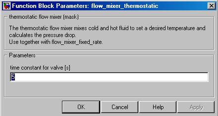

flow_mixer_thermostatic
Path: CARNOT/hydraulics
Purpose
The thermostatic flow mixer valve mixes cold and hot fluid to set a desired
temperature and calculate the pressure drop.
Description
Used for setting fluid temperature to a desired value Tset by mixing cold and
hot flow. If Tset is higher than the temperatures of the both incoming flows,
the maximum temperature of the inlets is the outlet temperature. The flow from
the other inlet is zero. The tempering valve sets fdiv according to
the temperatures. To model the heat capacity of the valve the temperature is
delayed by a transfer function.
For more details, see the flow-mixer block.
Inputs:
Outputs:
Example:see temper.mdl
Parameters and Dialog Box

Characteristics
Direct Feedthrough Yes
Sample
time Inherited
from driving block
Number of States 1
Vectorized No